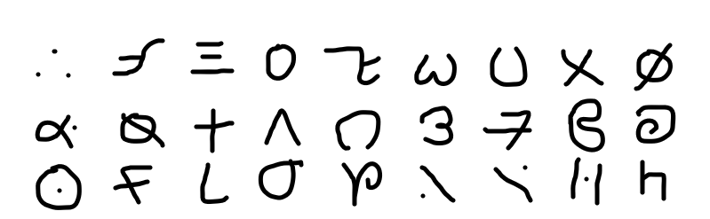

萨尔瓦多字母是用于萨尔瓦多语的全音素文字。基本萨尔瓦多字母共有24个，由刘三土设计，分别是19个辅音字母、5个元音字母。此外社区也提出了扩充字母等对萨尔瓦多字母的扩展方案。
萨尔瓦多字母的字形像是拉丁字母，希腊字母，西里尔字母的结合体，自左向右书写，有基线和上伸下延部，但上下延伸部较少看起来使萨尔瓦多字母字形偏小。5个元音字母有特定的长音符号。其字母还有相应的大小写。
萨尔瓦多字母的输入采用萨尔瓦多字母字体。每个英文字母都对应一个萨尔瓦多字母。
| 目录 |
| 1 萨尔瓦多字母表 |
| 2 字母特殊发音 |
| 3 长音符号与元音组合 |
| 4 重音 |
| 5 字母Nn,Ии,Mm |
| 6 历史 |
| 6.1 旧萨尔瓦多字母 |
| 序号 | 字母（大·小写） | 发音 | 拉丁转写 | 名称 |
| 1 | A a | /a/ | a | aleva |
| 2 | B b | /b/ | b | beicj |
| 3 | S s | /s/ | s | sor |
| 4 | O o | /ɔ/ | o | olav |
| 5 | V v | /v/ | v | velas |
| 6 | M m | /'m/ | m | mi |
| 7 | N n | /'n/ | n | ni |
| 8 | W w | /n/ | n | ew |
| 9 | K k | /k/ | k | kap |
| 10 | F f | /f/ | f | f\i |
| 11 | I i | /i/(/ʝ/) | i/y | iot |
| 12 | L l | /l/ | l | lamde |
| 13 | P p | /p/ | p | pqi |
| 14 | R r | /ɻʷ/(/ɽ/) | r | rqu |
| 15 | T t | /t/ | t | taff |
| 16 | U u | /ʊ/ | u | uro |
| 17 | X x | /x/(/ç/) | kh | xqi |
| 18 | Z z | /z/(/dz/) | z | zet |
| 19 | C c | /ts/ | c | cera |
| 20 | D d | /d/ | d | dalef |
| 21 | E e | /ɛ/ | e | ero |
| 22 | G g | /ɣ/(/g/) | g | gemm\r |
| 23 | J j | /dʒ/ | j | jet |
| 24 | H h | 不发音 | h | horq |
（1）字母Ππ，ꟻt，Ƚʟ在词首或词尾发送气清音，在词中发该字母对应的不送气清音。
（2）字母组合cλ，зλ，sλ发/δ/，/ʒ/，/ʃ/的音。
（3）字母Hh在词首发清音，在词中或词尾发浊音。
（4）字母Xx在倒数第二个字母且下一个字母为†+时，发音为/ς/,其余情况都读/x/。
（5）字母组合cλ，sλ在词尾时，后面有一个轻微元音/+/。
（6）字母Ee在字母†+,Ии 或Уy前面时，发/ə/的音，字母3з在元音后且后面没有元音时也发/ə/的音。
（7）字母†+在字母3з前面且3з后面没有元音时不发音。
（1）长音符号近似二声声调，写作“΄”，在字母上面。
（2）长音符号只能加在元音上面，当带有长音符号的单元音发音时，声音会由一个音节变为两个音节。
（3）双元音除e+外，其余全为长元音，本身就占两个音节，不可以加长音符号。
（4）e+在通常情况下发/ı/的音，在e处加长音符号发/eı/。
（5）双元音有ɑ+,e+,y+,o+,ɑy,ey,+y。
（6）字母组合+ɑ,+e,+o不算双元音，其后面的ɑ,e,o不能加长音符号，当前面的+带长音符号时，+占两个音节，后面的元音占一个音节。
（1）当元音结尾时，倒数第二个元音为重音。
（2）当辅音结尾时，倒数第一个元音为重音。
（3）当字母Ии,3з,Ξs结尾时，倒数第二个音节为重音，Nn不能作为结尾。
（4）当只有一个元音时，没有重音。
这三个字母为鼻辅音，其中Ии可以附着在元音后面，Nn,Mm不可以附着。
附着与不附着的区别：
ana读若“阿纳”，aиa读若“安娜”。
旧萨尔瓦多字母的概述图（1张）

旧萨尔瓦多字母是刘三土最早设计的一套萨尔瓦多字母书写系统。一共有27个字母，分6个元音和21个辅音，没有大小写，每一个字母的大小大约占一整个汉字的大小。现代萨尔瓦多字母由旧萨尔瓦多字母延伸而来，保留了最具特色的几个字母形状，如字母